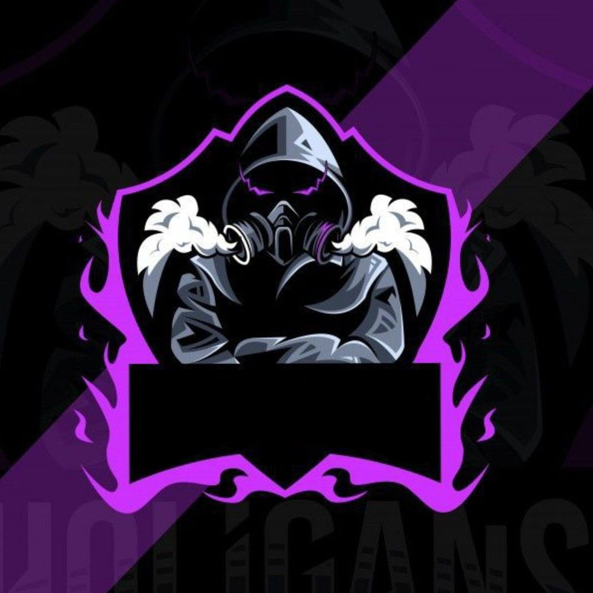

Credits to Madroid for providing me with the proxies.
To search for a specific game, choose the game category you want to play and hit ctrl+f
Hi! Welcome to Tustack 23, or in other words, Distraction Paradise.
Tustack 23 was originally created as a small coding project which turned into a big one.
This website was made as a way to have fun and bring games together. If you get caught playing it during class, it's a u problem:D Have fun!